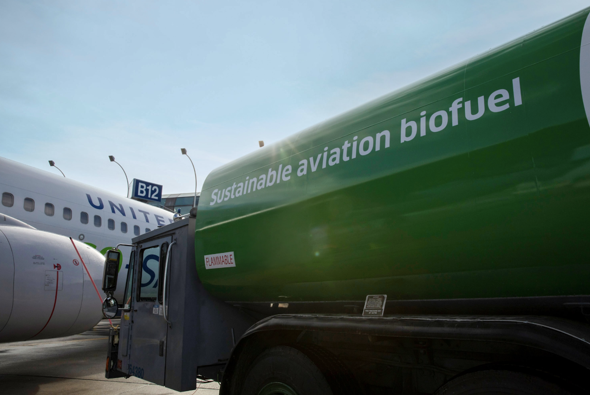

Over 1 billion gallons of SAF produced per year
By 2028, over one billion gallons of Sustainable Aviation Fuel (SAF) will be produced each year. While this is still a fraction of the amount of kerosene the aviation industry currently uses - roughly 100 billion gallons per year and rising - the first wave of SAF technologies will have reached technical maturity and will be coming down the cost curve.
Image Courtesy of United Airlines
In 2021, and for the next five to ten years, most SAF will be produced from waste: waste oils, garbage and municipal solid waste (MSW), agricultural residue, and forestry and wood mill waste. Currently, roughly 60 million gallons of SAF are made each year from waste oils, referred to as either Hydrotreated Vegetable Oil (HVO) or Hydroprocessed Esters and Fatty Acids (HEFA). However, there is a limited amount of HVO and HEFA available, and some sources compete with food (e.g. palm oil). Many companies are now commercializing processes to make SAF from other waste materials, and more than 20 new SAF production facilities are planned.
Beyond the five to ten year horizon, expect to see new technologies to make SAF from CO2 and green hydrogen. [see next node!] While we need to deploy SAF and other technologies much faster to keep emissions from the aviation industry in check, emission-free flight is possible. We are working with Boom Supersonic and other partners to accelerate progress in this area.